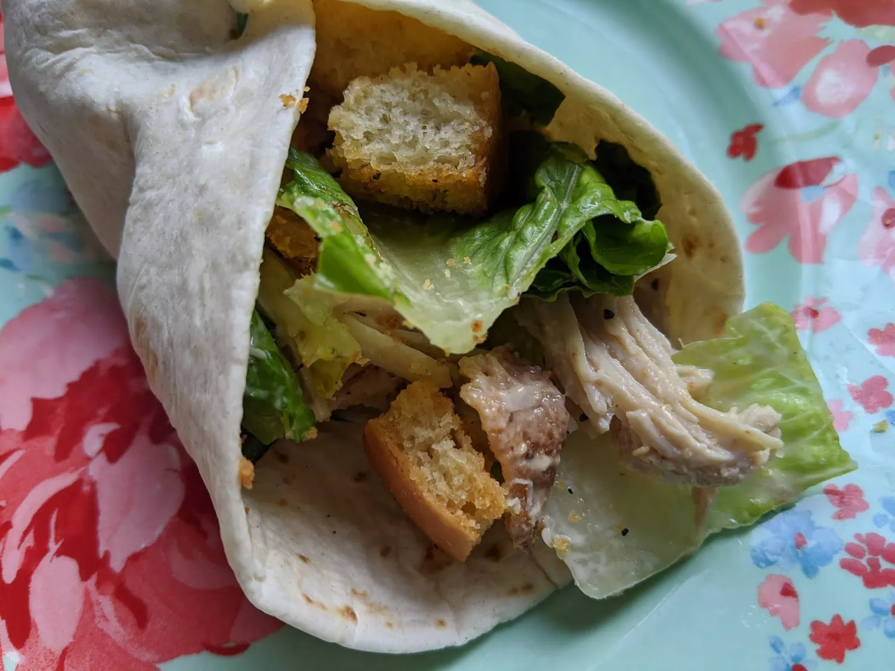

Chicken Caesar Wrap

Description
I would like to present a quick and easy to make - Chicken Caesar Wrap!
In just a few quick minutes you can make this simple and tasty crispy
chicken wrap by following our simple guide.
Ingredients
- 1 Slice of bacon
- 1 Cup chopped romaine lettuce
- 1/2 Cup cooked, shredded chicken
- 1/4 Cup croutons
- 1 Tablespoon Caesar's Salad Dressing
- 1 Tablespoon grated Parmesan Cheese
- 1 Large flour tortilla
Steps
- Place bacon slice in a large skillet and cook over medium-high heat, turning occasionally, until evenly browned, about 10 minutes. Drain bacon slice on paper towels, cool slightly, and crumble.
- Combine bacon, lettuce, shredded chicken, croutons, dressing, and Parmesan cheese for the filling a a bowl. Toss gently to combine and everything is evenly coated with dressing. Adjust dressing amount to your personal preference - for me 1 to 1 1/2 tablespoons is about right.
- Warm tortilla in the microwave for about 15 seconds to make it more pliable.
- Lay filling ingredients down the center, and roll your wrap up! Enjoy!